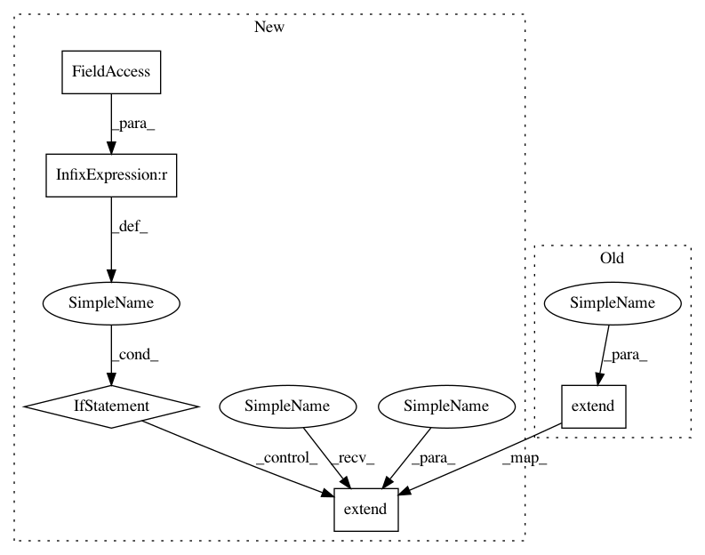

284b78172fc5072c9aef5d6980d9ea47bb511dee,opts.py,MarkdownHelpFormatter,_format_action,#MarkdownHelpFormatter#,391
Before Change
lines.append("")
lines.append("```")
help_text = self._expand_help(action)
lines.extend(self._split_lines(help_text, 80))
lines.append("```")
lines.extend(["", ""])
return "\n".join(lines)
After Change
.start_section("////// **%s**" % heading)
def _format_action(self, action):
if action.dest == "help" or action.dest == "md":
return ""
lines = []
lines.append("* **-%s %s** " % (action.dest,
"[%s]" % action.default
if action.default else ""))
if action.help:
help_text = self._expand_help(action)
lines.extend(self._split_lines(help_text, 80))
lines.extend(["", ""])
return "\n".join(lines)
In pattern: SUPERPATTERN
Frequency: 3
Non-data size: 5
Instances
Project Name: OpenNMT/OpenNMT-py
Commit Name: 284b78172fc5072c9aef5d6980d9ea47bb511dee
Time: 2017-12-17
Author: sasha.rush@gmail.com
File Name: opts.py
Class Name: MarkdownHelpFormatter
Method Name: _format_action
Project Name: OpenNMT/OpenNMT-py
Commit Name: 284b78172fc5072c9aef5d6980d9ea47bb511dee
Time: 2017-12-17
Author: sasha.rush@gmail.com
File Name: opts.py
Class Name: MarkdownHelpFormatter
Method Name: _format_action
Project Name: chainer/chainercv
Commit Name: 4fda6d1c940396029a054aa5157524912fc6afa2
Time: 2018-04-10
Author: Hakuyume@users.noreply.github.com
File Name: examples/ssd/train_multi.py
Class Name:
Method Name: main